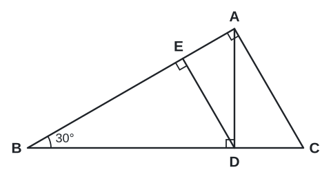

נתון: a ו־b הם מספרים טבעיים.1½a < b , a + ab = 72
איזה מהבאים יכול להיות ערכו של b?
הצגת הפתרון
התשובה הסופית4תשובה (4)11
דרך הפתרון והסבר
נוציא את a כגורם משותף:a + ab = a(1 + b) = 72לכן 1 + b מחלק את 72. נבדוק כל תשובה, וגם את התנאי 1.5a < b:b = 7: 1 + b = 8, a = 9. 1.5 · 9 = 13.5 – לא קטן מ־7 ✗b = 8: 1 + b = 9, a = 8. 1.5 · 8 = 12 – לא קטן מ־8 ✗b = 9: 1 + b = 10, ו־72 לא מתחלק ב־10 ✗b = 11: 1 + b = 12, a = 6. 1.5 · 6 = 9 < 11 ✓התשובה: b = 11.
💡 הלקח
מוציאים גורם משותף: a(1 + b) = 72, ובודקים כל זוג גם מול התנאי השני.
🔁 דפוס חוזר: פירוק לגורמים ראשוניים מפרקים לגורמים ראשוניים – וכך רואים מה מחלק את המספר ומה חסר בו.
🔁 דפוס חוזר: מקרה קיצוני למקסימום או מינימום – בונים את המקרה הקיצוני ובודקים שכל התנאים מתקיימים.
מוקשים נפוצים
לבדוק גם את התנאי השני (1.5a < b), לא רק שהמכפלה מתאימה.
נבדקהפתרון תואם את מפתח התשובות של הספר.
שאלה 2
שני מעגלים חופפים שרדיוסם r הונחו זה על גבי זה ויצרו את הצורה שבסרטוט.
על פי נתונים אלו והנתונים שבסרטוט, השטח הלבןהשטח האפור = ?
הצגת הפתרון
התשובה הסופית1תשובה (1)2π2+π
דרך הפתרון והסבר
שני המרכזים ושתי נקודות החיתוך של המעגלים יוצרים ריבוע (כל זוויותיו ישרות). צלע הריבוע היא רדיוס: r.שטח הריבוע: r².הצלעות של הריבוע, כשממשיכים אותן, עוברות דרך המרכזים ומחלקות כל מעגל לארבעה רבעים (שני ישרים מאונכים דרך המרכז).כל רבע מעגל: πr²4.הרבעים הפנימיים (הפונים זה אל זה) מוכלים כולם בתוך הריבוע. נשארים בכל מעגל שלושה רבעים חיצוניים.השטח האפור – הריבוע, הרבע העליון של המעגל העליון והרבע התחתון של המעגל התחתון:r² + 2 · πr²4 =r² + πr²2 =r²(2 + π)2השטח הלבן – ארבעת הרבעים שבצדדים:4 · πr²4 = πr²היחס:πr² ÷ r²(2 + π)2 =2πr²r²(2 + π) =2π2 + π
משוואה בפעולה מוגדרת – פותרים עבור $(x) כמו משתנה.
🔁 דפוס חוזר: פעולה מוגדרת מציבים בדיוק לפי ההגדרה, מבפנים החוצה, ושמים לב לסדר.
מוקשים נפוצים
לפתור עבור $(x) – לא לשכוח לחלק ב־2.
נבדקהפתרון תואם את מפתח התשובות של הספר.
שאלה 4
x הוא מספר תלת־ספרתי בו ספרת העשרות והמאות גדולות פי 4 מספרת האחדות.
מה מהבאים נכון בהכרח?
הצגת הפתרון
התשובה הסופית3תשובה (3)x מתחלק ב־9 ללא שארית
דרך הפתרון והסבר
נסמן את ספרת האחדות u. ספרות המאות והעשרות הן 4u, ולכן 4u ≤ 9:u = 1: המספר 441.u = 2: המספר 882.נבדוק את הטענות:זוגיות: 441 אי־זוגי ו־882 זוגי – אין זוגיות קבועה, (1) ו־(2) לא בהכרח.סכום הספרות: 4 + 4 + 1 = 9, ו־8 + 8 + 2 = 18 – שניהם מתחלקים ב־9.לכן x מתחלק ב־9 בהכרח: תשובה (3).
💡 הלקח
ספרות פי 4 מספרת האחדות ≤ 9 ⇒ u = 1 או 2 בלבד.
🔁 דפוס חוזר: ספרת האחדות ספרת האחדות של תוצאה תלויה רק בספרות האחדות, ובחזקות היא חוזרת במחזור.
🔁 דפוס חוזר: ספרות וערך מקום כותבים מספר לפי ערך המקום: 100a + 10b + c.
מוקשים נפוצים
u = 0 לא מתאים (אז כל הספרות 0 והמספר לא תלת־ספרתי).
נבדקהפתרון תואם את מפתח התשובות של הספר.
שאלה 5
20 חברי נבחרת האתלטיקה התחרו בריצת 2000 מטר. הממוצע הכללי של הנבחרת היה 184 שניות. זמן הריצה הממוצע (בשניות) של שמונת האצנים המצטיינים היה 181 שניות.
מה היה זמן הריצה הממוצע (בשניות) של שאר חברי הנבחרת?
הצגת הפתרון
התשובה הסופית4תשובה (4)186
דרך הפתרון והסבר
נעבוד עם סכומים במקום ממוצעים.סך הזמנים של כל ה־20:20 · 184 = 3680 שניותסך הזמנים של 8 המצטיינים:8 · 181 = 1448 שניותסך הזמנים של 12 האחרים:3680 − 1448 = 2232הממוצע שלהם:223212 = 186 שניות
💡 הלקח
עובדים עם סכומים, לא ממוצעים: סכום כולל − סכום קבוצה = סכום השאר.
🔁 דפוס חוזר: ממוצע משוקלל וסכומים עובדים עם סכומים (ממוצע × כמות) – לא מחברים ולא מחסרים ממוצעים.
מוקשים נפוצים
לא מחסרים ממוצעים – מחסרים סכומים ואז מחלקים.
נבדקהפתרון תואם את מפתח התשובות של הספר.
שאלה 6

בסרטוט שלפניכם משולש ABC. D ו־E נקודות על הצלעות BC ו־AB בהתאמה.
לאור נתונים אלו ונתוני הסרטוט, שטח טרפז EACDשטח משולש BED = ?
הצגת הפתרון
התשובה הסופית4תשובה (4)79⚠
דרך הפתרון והסבר
במשולש ABC הזווית ב־A ישרה והזווית ב־B היא 30°. נבחר BC = 4:AC = 2 (מול 30°, חצי מהיתר), AB = 2√3.AD גובה ליתר. במשולש ABD (ישר זווית ב־D):BD =AB · cos 30° =2√3 · √32 =3DE ⊥ AB. במשולש BED (ישר זווית ב־E) היתר BD = 3:DE = 32 (מול 30°), BE = 3√32שטח BED: 12 · 32 · 3√32 = 9√38שטח ABC:12 · 2√3 · 2 = 2√3 = 16√38שטח המרובע EACD (מה שנשאר):16√38 − 9√38 = 7√38היחס:7√38 ÷ 9√38 = 79
💡 הלקח
משולש 30°-60°-90°: בוחרים יתר 4 כדי שכל האורכים ייצאו נוחים.
🔁 דפוס חוזר: משולשים מיוחדים משולש שווה צלעות: גובה s√32. במשולש 30-60-90 הניצב מול 30° הוא חצי היתר. 📐 לדף הנוסחאות
🔁 דפוס חוזר: בחירת מספרים נוחים ביחסים ובטענות "בהכרח" – מציבים מספרים נוחים ובודקים.
מוקשים נפוצים
לבחור BC = 4 כדי שכל האורכים ייצאו נוחים.
נבדקהפתרון תואם את מפתח התשובות של הספר.
שאלה 7
נתון: (√x − √y) · √x > (√x + √y) · √y
x ו־y מספרים חיוביים.
מה מהבאים יכול להיות ערכו של x?
הצגת הפתרון
התשובה הסופית4תשובה (4)כל התשובות לא יתכנו
דרך הפתרון והסבר
נפתח את שני האגפים:(√x − √y)√x = x − √xy(√x + √y)√y = √xy + yהאי־שוויון:x − √xy > √xy + y ⇒x − 2√xy − y > 0נחלק ב־y (חיובי) ונסמן t = √xy:t² − 2t − 1 > 0השורשים של t² − 2t − 1 = 0 הם 1 ± √2. t חיובי, ולכן:t > 1 + √2 ⇒xy > (1 + √2)² =3 + 2√2 ≈5.83כלומר x > 5.83y בערך. אף אחת מהתשובות (12y, y, 2y) לא מתאימה: התשובה (4).
💡 הלקח
מציבים t = √x/y ומקבלים אי־שוויון ריבועי.
🔁 דפוס חוזר: הצבה של ביטוי חוזר ביטוי שחוזר – מסמנים אותו באות אחת ופותרים משוואה פשוטה יותר.
מוקשים נפוצים
ההצבה t = √xy הופכת את האי־שוויון לריבועי.
נבדקהפתרון תואם את מפתח התשובות של הספר.
שאלה 8
לניא קובייה הוגנת בת 6 פאות ועליה המספרים 1 עד 6. בשעה 8:00 בבוקר החל ניא להטיל את הקובייה, אחת לכל שעה עגולה ללא הפוגה במשך 24 שעות. איתן עבר לידו ב־14:00, ב־17:00 וב־22:00. מה הסיכוי שבשלושת הפעמים שעבר לידו ראה את אותה התוצאה בהטלת הקובייה?
הצגת הפתרון
התשובה הסופית2תשובה (2)(16)²
דרך הפתרון והסבר
איתן ראה שלוש הטלות שונות (ב־14:00, ב־17:00 וב־22:00), והן בלתי תלויות זו בזו.ההטלה הראשונה יכולה להיות כל תוצאה.השנייה צריכה להיות זהה לה: סיכוי 16.השלישית צריכה להיות זהה גם היא: סיכוי 16.הסיכוי: 16 · 16 = (16)²
💡 הלקח
"כולן אותו מספר" – הראשונה חופשית, ושאר ההטלות צריכות להתאים: (1/6)n−1.
🔁 דפוס חוזר: הסתברות סיכוי = רצוי חלקי כולל. "לפחות אחד" – דרך המשלים.
מוקשים נפוצים
ההטלה הראשונה חופשית – לכן (16)² ולא (16)³.
נבדקהפתרון תואם את מפתח התשובות של הספר.
שאלה 9
נתון: x הוא מספר שבעת חלוקתו ב־7 מתקבלת שארית 1.בהנחה ש־y הוא מספר טבעי, איזה מהביטויים הבאים אינו יכול להיות שווה ל־x?
הצגת הפתרון
התשובה הסופית2תשובה (2)(7y + 5)²
דרך הפתרון והסבר
x נותן שארית 1 בחלוקה ב־7. נבדוק את השארית של כל ריבוע. מספיק לעבוד עם השארית של מה שבסוגריים:(7y + 1)²: שארית 1² = 1 ✓(7y + 5)²: שארית 5² = 25 = 21 + 4, כלומר 4 ✗(7y + 6)²: שארית 6² = 36 = 35 + 1, כלומר 1 ✓(7y + 8)²: 8 נותן שארית 1, ולכן שארית 1 ✓הביטוי שאינו יכול להיות x: (7y + 5)².
💡 הלקח
שארית של ריבוע תלויה רק בשארית של הבסיס: (7y + k)² ≡ k².
🔁 דפוס חוזר: שאריות מחליפים כל מספר בשארית שלו – חיבור, חיסור וכפל שומרים עליה.
מוקשים נפוצים
7y לא משפיע על השארית – רק המספר שנוסף לו.
נבדקהפתרון תואם את מפתח התשובות של הספר.
שאלה 10
מספר "אידיאלי" הוא מספר שלם שאינו משתנה אם קוראים אותו בכיוון ההפוך. למשל, המספרים 12121 ו־23432 הם מספרים אידיאליים.
כמה מספרים חמש־ספרתיים עונים להגדרה של מספרים אידיאליים?
הצגת הפתרון
התשובה הסופית2תשובה (2)900
דרך הפתרון והסבר
מספר חמש־ספרתי אידיאלי נקרא אותו דבר משני הכיוונים, ולכן הוא מהצורה abcba.הספרה הראשונה שווה לחמישית, והשנייה לרביעית.מספיק לבחור את שלוש הספרות הראשונות:a: 1 עד 9 – 9 אפשרויות (מספר לא מתחיל ב־0).b: 0 עד 9 – 10 אפשרויות.c: 0 עד 9 – 10 אפשרויות.סך הכול:9 · 10 · 10 = 900
💡 הלקח
מספר שנקרא אותו דבר משני הכיוונים – קובעים חצי ממנו (הראשונה ≠ 0).
🔁 דפוס חוזר: ספרות וערך מקום כותבים מספר לפי ערך המקום: 100a + 10b + c.
מוקשים נפוצים
הספרה הראשונה לא יכולה להיות 0 – לכן 900 ולא 1000.